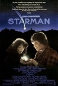
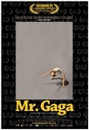
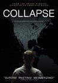
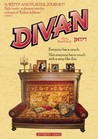
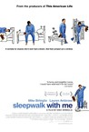
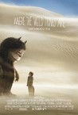
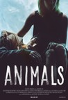
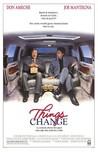

Movie Releases By Score

|
3001.
Welcome to New York
Release Date:
March 27, 2015

Inspired by one of the most high-profile public implosions in recent memory, Welcome to New York follows a prominent international banker (Gérard Depardieu) as he spirals out of control during a drug and sex-fueled trip to America—culminating in a shocking incident involving a hotel maid and his subsequent arrest. [IFC Films]
|

|
3002.
Rosewood
Release Date:
February 21, 1997

This film is a dramatic adaptation of a racially-charged historical event that took place in central Florida in 1923.
|
3003.
Divide and Conquer: The Story of Roger Ailes
Release Date:
December 7, 2018
Divide and Conquer: The Story of Roger Ailes deftly fuses the personal, the political and the just plain surreal as it charts the rise and fall of Fox News Chairman, Roger Ailes. Variously called a bulldog, a kingmaker, and the Ernest Hemingway of campaign advisors, Ailes was a key media consultant to Presidents Nixon, Reagan and George H.W. Bush, powerfully shaping American political history over the last fifty years. After creating a ratings powerhouse, with more viewers than all its direct competitors combined, in 2016 Ailes was forced out of Fox amid multiple allegations of sexual harassment. He died in May 2017 at the age of 77. Divide and Conquer is the origin story of one of the most powerful and divisive figures in American media, as well as a clear-eyed look at how we got where we are today.
|
|

|
3004.
Deep Blue
Release Date:
June 3, 2005

This innovative motion picture experience takes audiences on an epic, emotion-filled voyage through the last great frontier on earth: the ocean. (Miramax)
|

|
3005.
Le petit lieutenant
Release Date:
September 8, 2006
A gripping police noir, Le Petit Lieutenant tells the story of Antoine, an ambitious young cop from the provinces who joins a plainclothes crime unit in Paris. Antoine spends his days eagerly awaiting his first assignment, drinking with his fellow detectives, and developing and unlikely relationship with his superior, a veteran policewoman with a troubled past. But when the body of a drifter is found murdered along the Seine, a seemingly routine investigation suddenly turns violent and forever changes all their lives. (Cinema Guild)
|
3006.
The Land of Steady Habits
Release Date:
September 14, 2018
Anders Hill, long ensconced in "the land of steady habits"-the affluent hamlets of Connecticut that dot the commuter rail line-is finally ready to reap the rewards of a sensible life. Into his mid fifties and newly retired, his grown son's college tuitions paid in full, Anders decides he's had enough of steady habits: he leaves his wife, buys a condo, and waits for freedom to transform him. Stripped of the comforts of his previous identity, Anders embarks on a clumsy, and heartbreaking journey to reconcile his past with his present. [Netflix]
|
|
3007.
From Up on Poppy Hill
Release Date:
March 15, 2013

Set in Yokohama in 1963, this lovingly hand-drawn film centers on Umi and Shun and the budding romance that develops as they join forces to save their high school’s ramshackle clubhouse from demolition. [GKIDS]
|
|
3008.
22 Jump Street
Release Date:
June 13, 2014
After making their way through high school (twice), big changes are in store for officers Schmidt (Jonah Hill) and Jenko (Channing Tatum) when they go deep undercover at a local college. But when Jenko meets a kindred spirit on the football team, and Schmidt infiltrates the bohemian art major scene, they begin to question their partnership. Now they don't have to just crack the case - they have to figure out if they can have a mature relationship. If these two overgrown adolescents can grow from freshmen into real men, college might be the best thing that ever happened to them.
|
|
3009.
The Pervert's Guide to Ideology
Release Date:
November 1, 2013
Cultural theorist superstar Slavoj Žižek re-teams with director Sophie Fiennes (The Pervert's Guide to Cinema).
|
|

|
3010.
Black Death
Release Date:
March 11, 2011
The year is 1348. Europe has fallen under the shadow of the Black Death. As the plague decimates all in its path, fear and superstition are rife. In this apocalyptic environment, the church is losing its grip on the people. There are rumors of a village, hidden in marshland that the plague cannot reach. There is even talk of a necromancer who leads the village and is able to bring the dead back to life. Ulric, a fearsome knight, is charged by the church to investigate these rumors. He enlists the guidance of a novice monk, Osmund to lead him and his band of mercenary soldiers to the marshland, but Osmund has other motives for leaving his monastery. Their journey to the village and events that unfold take them into the heart of darkness and to horrors that will put Osmund’s faith in himself and his love for God to the ultimate test. (Magnet Releasing)
|

|
3011.
We Are What We Are
Release Date:
September 27, 2013
A seemingly wholesome and benevolent family, the Parkers have always kept to themselves, and for good reason. Behind closed doors, patriarch Frank rules his family with a rigorous fervor, determined to keep his ancestral customs intact at any cost. As a torrential rainstorm moves into the area, tragedy strikes and his daughters Iris and Rose are forced to assume responsibilities that extend beyond those of a typical family. As the unrelenting downpour continues to flood their small town, the local authorities begin to uncover clues that bring them closer to the secret that the Parkers have held closely for so many years. [Entertainment One]
|
|  |
3012.
Starman
Release Date:
December 14, 1984
An alien takes the form of a young widow's husband and asks her to drive him from Wisconsin to Arizona.
|

|
3013.
Young Adult
Release Date:
December 9, 2011
Mavis Gary is a writer of teen literature who returns to her small hometown to relive her glory days and attempt to reclaim her happily married high school sweetheart. When returning home proves more difficult than she thought, Mavis forms an unusual bond with a former classmate who hasn't quite gotten over high school, either. (Paramount Pictures)
|

|
3014.
Postcards from the Edge
Release Date:
September 12, 1990
Postcards from the Edge is a film about a very real mother-daughter relationship set against the backdrop of today's Hollywood. (Sony Pictures)
|

|
3015.
Oasis: Supersonic
Release Date:
October 26, 2016
From the Academy Award®-winning producers of Amy and Senna comes this essential and entertaining look at the meteoric rise of the seminal 90s rock band Oasis. The film immerses us in the raucous rock stars’ fast-paced world of electrifying music, wild debauchery, and epic fraternal feuding, weaving never-before-seen concert footage with candid interviews and an astonishing firsthand account of the backstage sibling rivalry that threatened to destroy the band.
|
3016.
Golden Exits
Release Date:
February 9, 2018
Nick (Adam Horovitz) has settled into a safe existence in a small pocket of Brooklyn, where he currently toils on an archival project for his father-in-law. Soon, 20-something Naomi (Emily Browning) arrives from Australia to assist Nick for the semester. She has no acquaintances in the city beyond a loose family connection to Buddy (Jason Schwartzman), a music producer who lives in the same neighborhood. For the few months she spends around Nick, Buddy, and their families, Naomi's presence upsets the precarious balance holding these two households.
|
|
3017.
Winnebago Man
Release Date:
July 9, 2010
Following a two-week shoot in August 1988 for a Winnebago sales ad, a 4-minute outtakes reel surfaced and eventually came to be known as "Winnebago Man." While the finished sales ad was sent to Winnebago dealers to promote the 1989 Itasca Sunflyer motorhome, copies of the "Winnebago Man" outtakes were being passed amongst the crew and their friends on VHS tape. Eventually the video fell in the hands of videotape collectors, who began copying and trading it, sparking an underground phenomenon that turned Jack Rebney into a cult hero. When the online video revolution took off on YouTube and other websites, Jack Rebney became one of the first viral video superstars. (Kino International)
|
|

|
3018.
Personal Best
Release Date:
February 5, 1982
The intertwined lives and loves of three highly-ranked athletes striving for the national team; Chris bounces between the beds of male coach Terry and her female friend, competitor, and role model Tory.
|

|
3019.
Gemini
Release Date:
March 30, 2018
A heinous crime tests the complex relationship between a tenacious personal assistant and her Hollywood starlet boss. As the assistant unravels the mystery, she must confront her own understanding of friendship, truth, and celebrity. [Neon]
|
3020.
Brad's Status
Release Date:
September 15, 2017
Brad Sloan (Ben Stiller) has a satisfying career and a comfortable life in suburban Sacramento where he lives with his sweet-natured wife, Melanie (Jenna Fischer), and their musical prodigy son, Troy (Austin Abrams), but it’s not quite what he imagined during his college glory days. Showing Troy around Boston, where Brad went to university, he can’t help comparing his life with those of his four best college friends: a Hollywood bigshot (Mike White), a hedge fund founder (Luke Wilson), a tech entrepreneur (Jemaine Clement), and a political pundit and bestselling author (Michael Sheen). As he imagines their wealthy, glamorous lives, he wonders if this is all he will ever amount to. But when circumstances force him to reconnect with his former friends, Brad begins to question whether he has really failed or is, in some ways at least, the most successful of them all.
|
|

|
3021.
52 Tuesdays
Release Date:
March 27, 2015
16-year-old Billie's reluctant path to independence is accelerated when her mother reveals plans for gender transition and their time together becomes limited to Tuesday afternoons. [Kino Lorber]
|

|
3022.
Last Days Here
Release Date:
March 2, 2012
The film studies the storied and tumultuous life of heavy metal legend Bobby Liebling and features the music of Liebling’s band Pentagram. (9.14 Pictures)
|
3023.
The Man Nobody Knew: In Search of My Father, CIA Spymaster William Colby
Release Date:
September 23, 2011
A son's riveting look at a father whose life seemed straight out of a spy thriller, The Man Nobody Knew: In Search of My Father, CIA Spymaster William Colby uncovers the secret world of a legendary CIA spymaster. Told by William Colby’s son Carl, the story is at once a probing history of the CIA, a personal memoir of a family living in clandestine shadows, and an inquiry into the hard costs of a nation's most cloaked actions. From the beginning of his career as an OSS officer parachuting into Nazi-occupied Europe, William Colby rose through the ranks of "The Company," and soon was involved in covert operations in hot spots around the globe. He swayed elections against the Communists in Italy, oversaw the coup against President Diem in Saigon, and ran the controversial Phoenix Program in Vietnam, which sparked today's legacy of counter-insurgency. But after decades of obediently taking on the White House's toughest and dirtiest assignments, and rising to become Director of CIA, Colby defied the President. Braving intense controversy, he opened up to Congress some of the agency's darkest, most tightly held secrets and extra-legal operations. (First Run Features)
|
|
3024.
Making the Boys
Release Date:
March 11, 2011
Before Prop 8, Milk or Will & Grace, before the AIDS epidemic, gay pride parades or the Stonewall uprising, The Boys in the Band changed everything. Making The Boys explores the drama, struggle and enduring legacy of the first-ever gay play and subsequent Hollywood movie to successfully reach a mainstream audience. Beloved by some for breaking new ground, and condemned by others for reinforcing gay stereotypes, The Boys in the Band sparked heated controversy that still exists four decades later. Featuring anecdotes from the surviving cast and filmmakers, as well as perspectives by legendary figures from stage and screen, Making The Boys traces the behind-the-scenes drama and lasting legacy of this cultural milestone. (First Run Features)
|
|

|
3025.
Aileen: Life and Death of a Serial Killer
Release Date:
January 9, 2004
This documentary provides an insight into the mind of Aileen Wournos (whose story is the basis for the feature film "Monster"), a deeply paranoid yet sympathetic person who lost her mind and killed seven people. (Nick Broomfield)
|

|
3026.
Nicholas Nickleby
Release Date:
December 27, 2002
Based on one of Charles Dickens' most beloved novels, this is the story of a young man who experiences a change of fortune upon the death of his father.
|

|
3027.
Real Women Have Curves
Release Date:
October 18, 2002

The story of Ana (Ferrera), a first generation Mexican-American teenager torn between her mainstream ambitions and her cultural heritage. (HBO Films)
|

|
3028.
The Score
Release Date:
July 13, 2001
Career thief Nick Wells (De Niro) postpones his plans for retirement and joins forces with a young upstart (Norton) to mastermind a nearly impossible theft.
|

|
3029.
The Road Home
Release Date:
May 25, 2001
The story of a Chinese man who works in the city, far from the village where he was born. When his father dies he comes home for the funeral and spends three days with his mother, thinking back to the period in which his parents met and fell in love. (Sony Pictures Classics)
|
3030.
The Pledge
Release Date:
January 19, 2001
Academy Award-winner Jack Nicholson stars as Jerry Black, a Nevada homicide detective who volunteers for one final investigation on the eve of his retirement. He offers his expertise at a compromised crime scene and ends up making a promise to the young victim's mother that will change his life forever. (Warner Brothers)
|
|

|
3031.
What Is Democracy?
Release Date:
January 16, 2019
Coming at a moment of profound political and social crisis, What Is Democracy? reflects on a word we too often take for granted. Director Astra Taylor’s idiosyncratic, philosophical journey spans millennia and continents: from ancient Athens’ groundbreaking experiment in self-government to capitalism’s roots in medieval Italy; from modern-day Greece grappling with financial collapse and a mounting refugee crisis to the United States reckoning with its racist past and the growing gap between rich and poor. Featuring a diverse cast—including celebrated theorists, trauma surgeons, activists, factory workers, asylum seekers, and former prime ministers—this urgent film connects the past and the present, the emotional and the intellectual, the personal and the political, in order to provoke and inspire. If we want to live in democracy, we must first ask what the word even means. [Zeitgeist Films]
|
|  |
3032.
Mr. Gaga
Release Date:
February 1, 2017
Mr. Gaga is a unique documentary experience that tells the story of the internationally acclaimed choreographer Ohad Naharin, who created the daring form of dance and “movement language” Gaga. When he was 22, he was invited to perform with the prestigious Martha Graham dance company, and attended Juilliard and the School of American Ballet simultaneously. But Ohad would not be happy until he could do exactly what he wanted. Moving back to Israel, Naharin became the Artistic Director of the Batsheva Dance Company, developing gaga within his own ensemble. Even after achieving worldwide acclaim, Naharin continues to fight every day, sometimes with his own dancers, once even with the president of Israel, to make his vision come to life. [Abramorama]
|

|
3033.
Mad Hot Ballroom
Release Date:
May 13, 2005
An inspiring look inside the lives of New York City school kids on a journey into the world of ballroom dancing, an unexpected arena where they discover new frontiers about attitude, movement, style and commitment. (Paramount Classics)
|
3034.
Only the Young
Release Date:
December 7, 2012
The friendship between a couple of high school boys in California, both snowboarders and evangelical Christians, is explored in this documentary by Eliazabeth Mimsand Jason Tippet.
|
|

|
3035.
Bronson
Release Date:
October 9, 2009
In 1974, a misguided 19 year old named Michael Peterson decided he wanted to make a name for himself and so, with a homemade sawn-off shotgun and a head full of dreams he attempted to rob a post office. Swiftly apprehended and originally sentenced to 7 years in jail, Peterson has subsequently been behind bars for 34 years, 30 of which have been spent in solitary confinement. With an intelligent, provocative and stylized approach, BRONSON (based on a true story) follows the metamorphosis of Mickey Peterson into Britain's most dangerous prisoner, Charles Bronson. [Magnet Releasing]
|

|
3036.
The Girl with the Dragon Tattoo
Release Date:
December 20, 2011
Based on Stieg Larsson's posthumously published crime thriller trilogy, "The Millennium Series." The book describes the mystery surrounding the long-unsolved disappearance of an heiress. A journalist recently dinged by a libel case and a young female hacker try to resolve it, stirring up bundles of personal and industrial corruption along the way. (Sony Pictures)
|

|
3037.
The Cage Fighter
Release Date:
February 2, 2018
When life hits him hard, Joe Carman punches back. Newly 40, Joe juggles long hours working in a boiler room, an ongoing custody battle, his wife’s chronic illness, and the demands of raising four girls. The one place he finds release is in the ring, where he competes in the bruising sport of mixed martial arts. Despite the promise he made to his family to stop fighting, Joe continues to train secretly, determined to prove that he can keep up with the new crop of younger, up-and-coming competitors. But as he contends with a series of increasingly worrying health scares, the question arises: how much is Joe willing to risk—his family, his marriage, maybe even his life—to keep fighting? [Sundance Selects]
|

|
3038.
Desperately Seeking Susan
Release Date:
April 12, 1985
A bored suburban housewife, seeking escape from her life, suffers amnesia after an accident, wakes up, and is mistaken for a free-spirited New York City drifter named Susan.
|

|
3039.
The Last Laugh
Release Date:
March 3, 2017
The Last Laugh is a feature documentary that proceeds from the premise that the Holocaust would seem to be an absolutely off-limits topic for comedy. But is it? History shows that even the victims of the Nazi concentration camps themselves used humor as a means of survival and resistance. Still, any use of comedy in connection with this horror risks diminishing the suffering of millions. So where is the line? If we make the Holocaust off limits, what are the implications for other controversial subjects—9/11, AIDS, racism—in a society that prizes freedom of speech?
|

|
3040.
Shadow Dancer
Release Date:
May 31, 2013
Set in 1990s Belfast, an active member of the IRA becomes an informant for MI5 in order to protect her son's welfare.
|

|
3041.
Syndromes and a Century
Release Date:
April 18, 2007
A film in two parts which sometimes echo each other. The two central characters are inspired by the filmmaker's parents, in the years before they became lovers. The first part focuses on a woman doctor, and is set in a space reminiscent of the world in which the filmmaker was born and raised. The second part focuses on a male doctor, and is set in a more contemporary space much like the world in which the filmmaker presently lives. Pearls of wisdom, descriptions of syndromes and fragments of time crystallize in luminous atmospheres and dot the modern architecture of the film, creating a charming, quiet incantation. (Strand Releasing)
|

|
3042.
Horton Hears a Who!
Release Date:
March 14, 2008
Based on the beloved children's book by Dr. Seuss, this is the tale of an imaginative elephant named Horton who hears a faint cry for help coming from a tiny speck of dust floating through the air. Although Horton doesn't know it yet, that speck houses an entire city named Who-ville, inhabited by the microscopic Whos, led by the mayor. Despite being ridiculed and threatened by his neighbors, who think he has lost his mind, Horton is determined to save the particle...because "a person's a person, no matter how small." (20th Century Fox)
|
3043.
The Nomi Song
Release Date:
February 4, 2005
A portrait of late German artist Klaus Nomi, this film is part documentary, part music film, part sci-fi, The Nomi Song is a "non-fiction film," or maybe even an oral history. It's not just the tale, it's the telling. (Palm Pictures)
|
|
|  |
3044.
Collapse
Release Date:
November 6, 2009
Meet Michael Ruppert, a different kind of American. A former Los Angeles police officer turned independent reporter, he predicted the current financial crisis in his self-published newsletter, From the Wilderness, at a time when most of Wall Street and Washington analysts were still in denial. Director Chris Smith has shown an affinity for outsiders in films like American Movie and The Yes Men. In Collapse, he departs stylistically form his past documentaries by interviewing Ruppert in a format that recalls that work of Errol Morris and Spalding Gray. (Vitagraph Films)
|

|
3045.
Star Trek: First Contact
Release Date:
November 22, 1996
Picard orders the Enterprise to follow the Borg back in time to stop them from destroying the Phoenix, Earth's first warp-speed vessel. (Paramount Pictures)
|

|
3046.
Sweaty Betty
Release Date:
January 8, 2016
In a cramped row house on the border of Washington D.C., two stories of big dreams take place. Floyd and his family have raised a 1,000 pound pig in their backyard, and are determined to turn her into the team mascot for the Redskins football team. Floyd puts his plan into motion, but the pig, named Miss Charlotte, draws unwanted attention. A few blocks away, Rico and Scooby, two teenage single fathers and best friends, are hanging around the neighborhood. As they scheme up a better life for themselves and their children, they are presented with an unexpected opportunity.
|
3047.
Becoming Astrid
Release Date:
November 23, 2018
The teenaged Astrid Lindgren (Alba August) leads a carefree life with her family in rural Sweden. Eager to break free from her strict religious upbringing, she accepts an internship at a local newspaper where she attracts the attention of its married editor, Blomberg (Henrik Rafaelsen). When Astrid becomes pregnant, she is forced to leave her childhood home for Copenhagen to secretly give birth to a son, Lasse, whom she reluctantly leaves with a foster mother, Marie (Trine Dyrholm). Astrid goes into self-imposed exile in Stockholm, refusing Blomberg’s offer of marriage but saving up her paltry salary for visits to see her son. When Marie falls ill, Astrid uses her imagination and flair for storytelling to reconnect with her child. In spite of her struggles, she emerges with a newfound courage that will form the foundation of a vast and beloved body of work.
|
|

|
3048.
No Date, No Signature
Release Date:
August 1, 2018
Forensic pathologist Dr. Nariman has a car accident with a motorcyclist and injures his 8-year-old son. He offers to take the child to a clinic nearby, but the father refuses his help and money. The next morning, in the hospital where he works, Dr. Nariman finds out that the little boy has been brought for an autopsy after a suspicious death. Dr. Nariman is facing a dilemma: is he responsible for the child's death due to the car accident or did the child die of food poisoning according to other doctors' diagnosis?
|

|
3049.
Deadline
Release Date:
June 4, 2004
In Deadline, directors Katy Chevigny and Kirsten Johnson tackle the volatile topic of the American capital punishment system with intelligence, compassion and balance. Furthermore, they capture the extraordinary transformation of one man, former Illinois governor George Ryan, who holds the power of life and death in his hands. (Big Mouth Productions)
|
|  |
3050.
Divan
Release Date:
March 17, 2004
Pearl Gluck travels to Hungary to retrieve a turn-of-the-century family heirloom: a couch upon which esteemed rabbis once slept. En route for the ancestral divan, Pearl encounters a colorful cast of characters who provide guidance and inspiration. (Zeitgeist Films)
|
|
|
3051.
The Great Dance: A Hunter's Story
Release Date:
September 29, 2000
This documentary by Craig and Damon Foster focuses on the surviving San bushmen in the central Kalahari.
|

|
3052.
Mansfield Park
Release Date:
November 17, 1999
Rozema's progressive interpretation of Jane Austen's novel finds Fanny Price (O'Connor) as a poor relation who at the age of 12 is "rescued" to begin a life in Mansfield Park, the estate of her aunt's husband. Fanny's beauty and bold intelligence become apparent as she attracts suitors and becomes troubled by the class system and the fact that slavery was the source of much of the family's wealth.
|

|
3053.
Next Stop Wonderland
Release Date:
August 21, 1998
A lighthearted story about a man and a woman who seem destined to be together and the hilarious chain of accidents that seem determined to keep them apart! (Miramax)
|

|
3054.
Macbeth
Release Date:
December 4, 2015
Macbeth is the story of a fearless warrior and inspiring leader brought low by ambition and desire. A thrilling interpretation of the dramatic realities of the times and a reimagining of what wartime must have been like for one of Shakespeare’s most famous and compelling characters, a story of all-consuming passion and ambition, set in war torn Scottish landscape. [Studiocanal]
|

|
3055.
Bobby Sands: 66 Days
Release Date:
November 30, 2016
In the spring of 1981 Irish Republican Bobby Sands’ 66-day hunger strike brought the attention of the world to his cause. Drawing on an Irish Republican tradition of martyrdom, Sands’ emotive, non-violent protest to be classified as a political prisoner became a defining moment in 20th century Irish history. Sands’ death after 66 days marked a key turning point in the relationship between Britain and Ireland, and brought a global spotlight to the Northern Irish conflict which eventually triggered international efforts to resolve it.
|
3056.
Warrior
Release Date:
September 9, 2011
An ex-Marine haunted by a tragic past, Tommy Riordan returns to his hometown of Pittsburgh and enlists his father, a recovered alcoholic and his former coach, to train him for an MMA tournament awarding the biggest purse in the history of the sport. As Tommy blazes a violent path towards the title prize, his brother, Brendan, a former MMA fighter unable to make ends meet as a public school teacher, returns to the amateur ring to provide for his family. Even though years have passed, recriminations and past betrayals keep Brendan bitterly estranged from both Tommy and his father. But when Brendan's unlikely rise as an underdog sets him on a collision course with Tommy, the two brothers must finally confront the forces that tore them apart, all the while waging the most intense, winner-takes-all battle of their lives. (Lionsgate)
|
|
3057.
I Will Follow
Release Date:
March 11, 2011
I Will Follow explores the surprising thirst for life we experience after the death of someone we love. Written and directed by Ava DuVernay, the festival award-winning drama chronicles a day in the life of a grieving woman (Salli Richardson-Whitfield), and the twelve visitors who help her move forward in a brave, new world. (AFFRM)
|
|

|
3058.
Far from the Madding Crowd
Release Date:
May 1, 2015
Independent, beautiful and headstrong Bathsheba Everdene (Carey Mulligan) attracts three very different suitors: Gabriel Oak (Matthias Schoenaerts), a sheep farmer, captivated by her fetching willfulness; Frank Troy (Tom Sturridge), a handsome and reckless Sergeant; and William Boldwood (Michael Sheen), a prosperous and mature bachelor. Thomas Hardy's timeless story of Bathsheba's choices and passions explores the nature of relationships and love - as well as the human ability to overcome hardships through resilience and perseverance. [Fox Searchlight]
|
|  |
3059.
Sleepwalk with Me
Release Date:
August 24, 2012
When an aspiring stand-up fails to express his true feelings about his girlfriend and his stalled career, his anxiety comes out in increasingly funny and dangerous sleepwalking incidents. [IFC Films]
|

|
3060.
Tales from the Gimli Hospital
Release Date:
January 1, 1988
While their mother is dying in the modern Gimli, Manitoba hospital, two young children are told a tale by their Icelandic grandmother about Einar the Lonely, his friend Gunnar, and the angelic Snjofridur in a Gimli of old.
|
3061.
Blinded by the Light
Release Date:
TBA
In 1987 during the austere days of Thatcher's Britain, a teenager learns to live life, understand his family and find his own voice through the music of Bruce Springsteen.
|
|

|
3062.
How to Train Your Dragon: The Hidden World
Release Date:
February 22, 2019
Now chief and ruler of Berk alongside Astrid, Hiccup has created a gloriously chaotic dragon utopia. When the sudden appearance of female Light Fury coincides with the darkest threat their village has ever faced, Hiccup and Toothless must leave the only home they’ve known and journey to a hidden world thought only to exist in myth. As their true destines are revealed, dragon and rider will fight together—to the very ends of the Earth—to protect everything they’ve grown to treasure. [Dreamworks]
|

|
3063.
Separate Lies
Release Date:
September 16, 2005
A compelling, humor-tinged romantic mystery that is not so much a "who done it" as an exploration of the riddle of why people make the fatal errors they do - in life, in marriage and when their decisions count the very most. (Fox Searchlight)
|

|
3064.
No One Knows About Persian Cats
Release Date:
April 16, 2010
Co-written by imprisoned Iranian-American journalist Roxana Saberi, the film is an indictment of cultural repression in Iran’s exciting underground music scene, a powerful cinematic foreshadowing of current protest movements, and a celebration of an entire generation of Iranians striving towards personal and creative freedom. (IFC Films)
|
|  |
3065.
Where the Wild Things Are
Release Date:
October 16, 2009
The film tells the story of Max, a rambunctious and sensitive boy who feels misunderstood at home and escapes to where the Wild Things are. Max lands on an island where he meets mysterious and strange creatures whose emotions are as wild and unpredictable as their actions. The Wild Things desperately long for a leader to guide them, just as Max longs for a kingdom to rule. When Max is crowned king, he promises to create a place where everyone will be happy. Max soon finds, though, that ruling his kingdom is not so easy and his relationships there prove to be more complicated than he originally thought. (Warner Bros.)
|

|
3066.
Paint It Black
Release Date:
May 19, 2017
What happens to a dream when the dreamer is gone? Paint It Black is the story of the aftermath of Michael's death, and Josie's struggle to hold onto the true world he shared with her. As Josie searches for the key to understanding his death, she finds herself both repelled and attracted to Michael's pianist mother, Meredith, who holds Josie responsible for her son's torment. Soon, the two women find themselves drawn into a twisted relationship reflecting equal parts distrust and blind need.
|
3067.
Run & Jump
Release Date:
January 24, 2014
After a stroke leaves her husband mentally disabled and fundamentally changed, spirited Irish housewife Vanetia (Maxine Peake) struggles to keep her family together in the wake of tragedy. A research grant from American doctor Ted Fielding (Will Forte), interested in documenting the family's recovery process, allows them to get by. Though Vanetia initially resents living under Ted's microscope, she soon finds comfort in his calming presence, while Ted responds to Vanetia's dynamic, unpredictable personality. As the two explore their bond within their unique situation, a new family begins to emerge. [IFC Films]
|
|
|  |
3068.
Animals
Release Date:
May 15, 2015
Bobbie (Kim Shaw) and Jude (David Dastmalchian) are a young couple living in their broken-down car parked alongside Chicago's Lincoln Park Zoo. Their days are a continuous ritual of theft and scoring until they must confront the difficult truth of their relationship after one of them is hospitalized.
|
3069.
Ingrid Goes West
Release Date:
August 11, 2017
Ingrid Thorburn (Aubrey Plaza) is an unhinged social media stalker with a history of confusing “likes” for meaningful relationships. Taylor Sloane (Elizabeth Olsen) is an Instagram-famous “influencer” whose perfectly curated, boho-chic lifestyle becomes Ingrid’s latest obsession. When Ingrid moves to LA and manages to insinuate herself into the social media star’s life, their relationship quickly goes from #BFF to #WTF.
|
|

|
3070.
Blood Brother
Release Date:
October 18, 2013
Blood Brother is an intimate portrait of Rocky Braat, a young man who longed to find a family. He didn't know it, but this desire would lead him to an AIDS hostel in India, a place of unspeakable hardship, where he would find almost more love and need than he could bear.
|
|
|
3071.
In Search of Beethoven
Release Date:
September 23, 2009
In Search of Beethoven addresses the romantic myth that Beethoven was a heroic, tormented figure battling to overcome his tragic fate, struck down by deafness, who searched for his 'immortal beloved' but remained unmarried. It delves beyond the image of the tortured, cantankerous, unhinged personality, to reveal someone quite different and far more interesting. (Seventh Art Productions)
|
3072.
RBG
Release Date:
May 4, 2018
At the age of 84, U.S. Supreme Court Justice Ruth Bader Ginsburg has developed a breathtaking legal legacy while becoming an unexpected pop culture icon. But without a definitive Ginsburg biography, the unique personal journey of this diminutive, quiet warrior's rise to the nation's highest court has been largely unknown, even to some of her biggest fans – until now.
|
|

|
3073.
Roman de gare
Release Date:
April 25, 2008
Best-selling author Judith Ralitzer is researching unlikely places to find characters for her next bestseller. As luck would have it, a serial killer with a penchant for magic tricks has just escaped from a high-security prison…providing the perfect source material for an intricately plotted, mood mystery. (Samuel Goldwyn Films)
|

|
3074.
Letters from Baghdad
Release Date:
June 2, 2017
Letters from Baghdad tells the extraordinary and dramatic story of Gertrude Bell, the most powerful woman in the British Empire in her day. She shaped the modern Middle East after World War I in ways that still reverberate today. More influential than her friend and colleague Lawrence of Arabia, Bell helped draw the borders of Iraq and established the Iraq Museum. Why has she been written out of history?
|

|
3075.
Collateral
Release Date:
August 6, 2004
Max (Foxx) has lived the mundane life of a cab driver for 12 years. The faces have come and gone from his rearview mirror, people and places he's long since forgotten -- until tonight. Vincent (Cruise) is a contract killer. When an offshore narcotrafficking cartel learns they are about to be indicted by a federal grand jury, they mount an operation to identify and kill the key witnesses, and the last stage is tonight. Tonight, Vincent arrives in L.A. -- and five bodies are supposed to fall. (DreamWorks)
|

|
3076.
Carandiru
Release Date:
May 14, 2004
Based on a true story, Carandiru is an adaptation of the book Carandiru Station by Drauzio Varella. Through the eyes of a doctor who worked in So Paulo's infamous Casa de Detneco, over twelve years, it tells stories of crime, revenge, love and friendship, culminating in the fateful massacre of 1992. (Sony Pictures Classics)
|
3077.
Carnage
Release Date:
September 5, 2003
In a wildly original, intertwining story that almost defies classification, Carnage traces the bizarre, often magical effects a 1,000-pound Andalusian bull has on a disparate group of characters. (Wellspring)
|
|

|
3078.
A Woman Is a Woman
Release Date:
May 16, 2003
Angela, an afternoon stripper in the sleazy Zodiac Club, yearns for motherhood "just because," but live-in boyfriend Jean-Claude Brialy "isn't ready yet," though hanger-on Jean-Paul Belmondo is more than happy to help out. (Film Forum)
|

|
3079.
Shadow of the Vampire
Release Date:
December 29, 2000
A witty, atmospheric, and deliciously feverish tale inspired by the great German film director F. W. Murnau and the making of his unforgettable "Nosferatu." (Lions Gate Films)
|

|
3080.
Earth
Release Date:
September 10, 1999
A group of diverse Indian friends and two men after one woman is torn apart by the 1947 partitioning of India. The woman in question (Das) is a nanny who is, with her eight-year-old charge (Sethna), insulated by her Parsi family's wealth and neutrality from the violence erupting around her.
|

|
3081.
Twin Falls Idaho
Release Date:
July 30, 1999
The story of Blake and Francis Falls, conjoined twins whose lives are as enigmatic as their unique appearance. In an eccentric hotel peopled with odd characters, the brothers dwell quietly. Then a beautiful young woman enters their lives, and for the first time someone sees the brothers' world from the inside. She makes them think of possibilities when they're certain there aren't any. They start to wonder how it would be to feel complete in new ways. (Sony Pictures Classics)
|

|
3082.
Pleasantville
Release Date:
October 23, 1998
In Gary Ross' daring modern fairy tale Pleasantville, an entire fictional town is granted a chance to experience the comedies, and dangers of real life. In this fantastical adventure, two late 20th Century teenagers (Maguire, Witherspoon) accidentally bring living color to a mysterious suburb trapped in a black-and-white 50's utopia -- and set off a revolution. (New Line Cinema)
|

|
3083.
Waiting for Guffman
Release Date:
January 31, 1997
A town of Blaine, Missouri is preparing for celebrations of its 150th anniversary. Corky St.Clair, an off-off-off-off-off-Broadway director is putting together an amateur theater show about the town's history, starring a local dentist, a couple of travel agents, a Dairy Queen waitress, and a car repairman. He invites a Broadway theater critic Mr. Guffman to see the opening night of the show. (Warner Bros.)
|

|
3084.
House of Sand and Fog
Release Date:
December 19, 2003
A gripping exploration of the American Dream gone awry, House of Sand and Fog is the story of two people driven to desperate measures to claim ownership of a house. (DreamWorks Pictures)
|
|
|
3085.
Grbavica: The Land of My Dreams
Release Date:
February 16, 2007
In her stunning debut feature, writer/director Jasmila Žbani? explores the painful long-term effects of war on a Bosnian woman and her daughter. (Strand Releasing)
|

|
3086.
Magnificent Desolation: Walking on the Moon 3D
Release Date:
September 23, 2005
This documentary takes audiences to the surface of the Moon to walk alongside the extraordinary Apollo astronauts who have stepped upon its surface. With never before seen photographs, CGI renditions of the lunar landscape and previously unreleased NASA footage, audiences will be immersed in the life-changing experiences of these astronauts by showcasing what they saw, heard, felt, thought and did while on the lunar surface. (IMAX)
|
|
|
3087.
Lourdes
Release Date:
February 17, 2010
Christine has been confined to a wheelchair for most of her life. In order to esacpe her isolation, she makes a journey to Lourdes, the iconic site of pilgrimage in the Pyrenees Mountains. She wakes up one morning seemingly cured by a miracle. The leader of the pilgrimage group, a handsome 40 year-old volunteer from the Order of Malta, begins to take an interest in her. She tries to hold on to this newfound chance for happiness while her cure provokes envy and admiration. (Palisades Tartan)
|

|
3088.
Clockers
Release Date:
September 13, 1995
A "clocker" is a 24-hour drug dealer, and Strike (Phifer) is the hardest-working one on the streets. But for Strike, time is running out. When the local drug kingpin (Lindo) tips Strike off about an opportunity for advancement, a rival dealer ends up dead, and Strike suddenly finds himself caught between two homicide detectives. One is Mazilli (Turturro), who's only looking for an easy bust. The other is Rocco (Keitel), who's looking for something much harder to find - the truth - and when Strike's law-abiding brother confesses to the murder, Rocco vows not to rest until he's sure the real shooter is behind bars. (Universal)
|
3089.
Euthanizer
Release Date:
July 20, 2018
The carefully balanced life of Veijo Haukka, a 50-year-old mechanic and freelance, black-market pet euthanizer begins to come apart.
|
|

|
3090.
The Mighty Quinn
Release Date:
February 17, 1989
When police officer Xavier Quinn's childhood friend, Maubee, becomes associated with murder and a briefcase full of ten thousand dollar bills, The Mighty Quinn must clear his name. Or try to catch him, which could be even trickier.
|
|  |
3091.
Things Change
Release Date:
October 21, 1988
Shoe-shiner Gino is hired to take the rap for a mafia murder. Two-bit gangster Jerry watches over Gino and gives him a weekend to remember.
|

|
3092.
Kusama - Infinity
Release Date:
September 7, 2018
Now the top-selling female artist in the world, Yayoi Kusama overcame countless odds to bring her radical artistic vision to the world stage. For decades, her work pushed boundaries that often alienated her from her peers and those in power in the art world. Kusama was an underdog with everything stacked against her—the trauma of growing up in Japan during World War II, life in a dysfunctional family that discouraged her creative ambitions, sexism and racism in the art establishment, mental illness in a culture where that was a particular shame, and eventually growing old and continuing to pursue and be devoted to her art full time. In spite of it all, Kusama has endured and has created a legacy of artwork that spans the disciplines of painting, sculpture, installation art, performance art, poetry, and novels. After working as an artist for over six decades, people around the globe are experiencing her Infinity Mirrored Rooms in record numbers, as Kusama continues to create new work every day.
|
3093.
Don't Breathe
Release Date:
August 26, 2016
A trio of friends break into the house of a wealthy blind man, thinking they’ll get away with the perfect heist. They’re wrong.
|
|

|
3094.
Molly's Game
Release Date:
December 25, 2017
Molly's Game is the true story of Molly Bloom a beautiful, young, Olympic-class skier who ran the world's most exclusive high-stakes poker game for a decade before being arrested in the middle of the night by 17 FBI agents wielding automatic weapons. Her players included Hollywood royalty, sports stars, business titans and finally, unbeknownst to her, the Russian mob. Her only ally was her criminal defense lawyer Charlie Jaffey, who learned that there was much more to Molly than the tabloids led us to believe.
|
|
|
3095.
Neshoba
Release Date:
August 13, 2010
NESHOBA tells the story of a Mississippi town still divided about the meaning of justice, 40 years after the murders of civil rights workers James Chaney, Andrew Goodman and Michael Schwerner. Although Klansmen bragged openly about what they did in 1964, no one was held accountable until 2005, when the State indicted preacher Edgar Ray Killen, an 80-year-old notorious racist and alleged mastermind of the killings. Through intimate interviews with the families of the victims, candid interviews with black and white Neshoba County Citizens, and exclusive, first time interviews with Killen, the film explores whether healing and reconciliation are possible without telling the unvarnished truth.
|

|
3096.
Star Trek IV: The Voyage Home
Release Date:
November 26, 1986
To save Earth from an alien probe, Admiral Kirk and his fugitive crew go back in time to 20th century Earth to retrieve the only beings who can communicate with it, humpback whales.
|
3097.
Whitey: United States of America v. James J. Bulger
Release Date:
June 27, 2014
Whitey: United States of America v. James J. Bulger follows the trial of the infamous gangster James “Whitey” Bulger, using the courtroom action as a springboard to examine accusations of multi-faceted corruption within our nation’s law enforcement and legal systems. Throughout this violent and sordid story, the central question becomes the nature of Whitey's relationship with law enforcement. Was Bulger an informant, as everyone believes, or, as Bulger's lawyers claim, is there actual proof that this claim is yet more misinformation and obfuscation by the government in an attempt to protect itself and preserve its convictions?
|
|

|
3098.
Beyond the Gates
Release Date:
March 9, 2007
Based on true events and filmed in Rwanda with genocide survivors as cast and crew, Beyond the Gates tells their shared story of humanity in the most inhumane circumstances. This is a film about the choices we make when we are free to choose. (IFC Films)
|

|
3099.
I Am Big Bird: The Caroll Spinney Story
Release Date:
May 6, 2015
For 45 years, Caroll Spinney has been beloved by generations of children as the man behind Sesame Street's Big Bird and Oscar the Grouch - and at 80 years old, he has no intention of stopping. A loving portrait of the man in the yellow suit, I Am Big Bird features extraordinary footage of Spinney's earliest collaborations with Jim Henson as it traces his journey from bullied child to childhood icon. And as the yellow feathers give way to grey hair, it is the man, not the puppet, who will steal your heart. [Tribeca Film]
|

|
3100.
Strongman
Release Date:
January 26, 2011
Strongman is a cinema verité documentary about Stanless Steel, The Strongest Man in the World at Bending Steel and Metal. Told with the kind of intimacy that can only be achieved with years of filming, Strongman follows the dreams and heartbreaking humanity of Stanless Steel—the only man alive who can bend a penny with his fingers—as he struggles to gain control of a world that seems constantly out of his grasp. Strongman is a film about faith, about believing in yourself and a film about never giving up. It is a film about weakness and a film about strength. (No Props, Inc.)
|